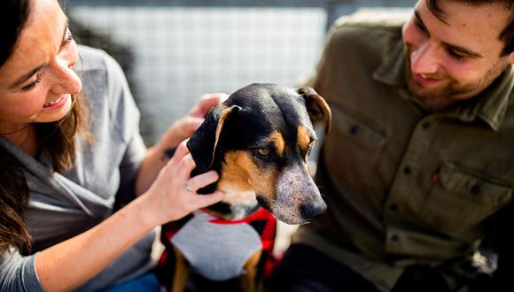
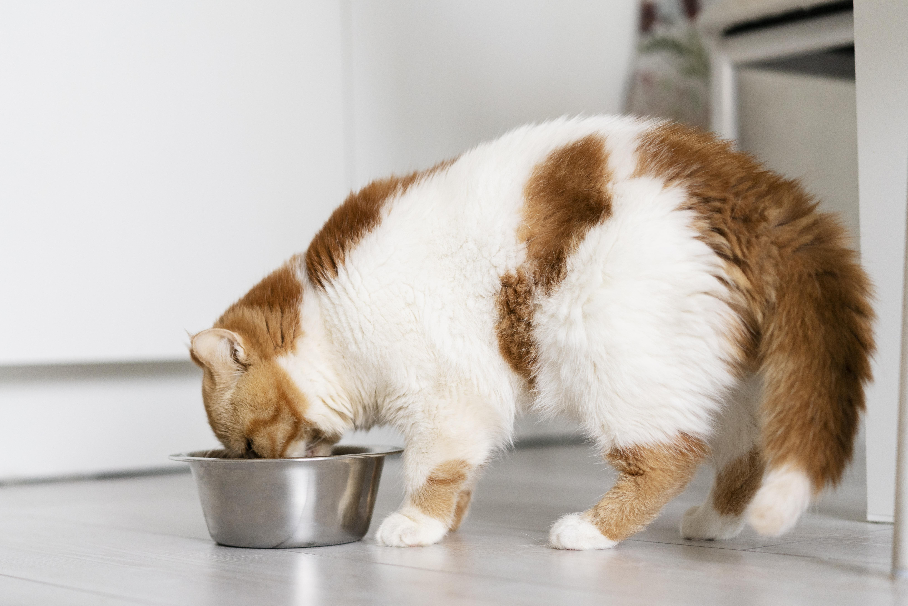
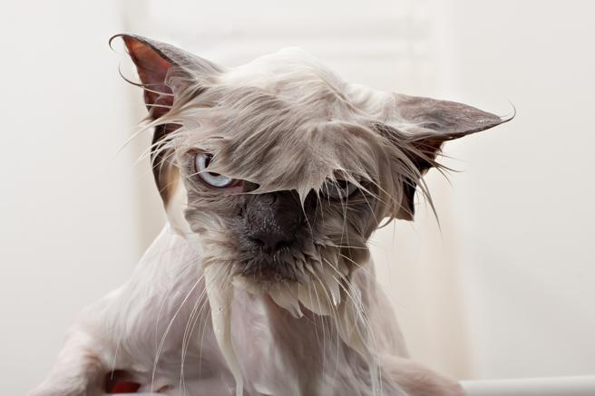
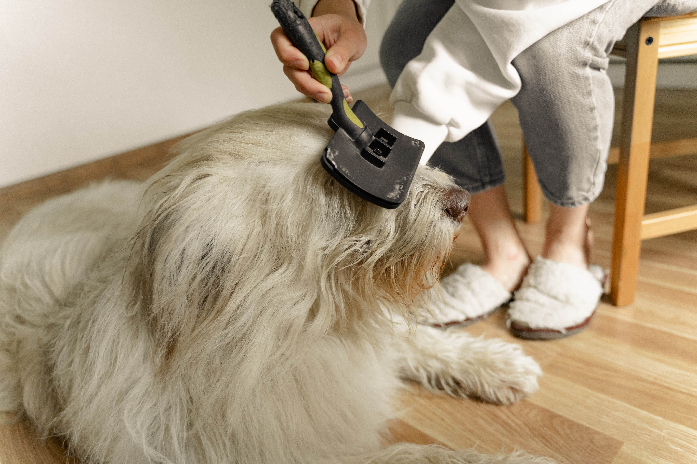

Adopción responsable
😍¿Estás pensando en adoptar una mascota? ¡Felicidades! Es una gran decisión. Son muchos los animales que necesitan nuestra ayuda y un dueño responsable, por ello queremos darte algunas recomendaciones a la hora de Adoptar
La adopción es una alternativa que a la hora de adquirir un animal de compañía beneficia a todos: a la familia, a las entidades de protección animal y, por supuesto, al propio perro o gato. Los adoptantes han manifestado que su motivo principal para hacerlo fue su sensibilización con el problema (38%) y para colaborar con la protectora (23%). También se han decidido a adoptar por recomendaciones, porque es una vía más económica y porque los animales están en mejores condiciones (12% para cada una de estas razones)
Facilitá el período de adaptación de tu nueva mascota para que pueda ir integrándose al nuevo hogar y acostumbrándose a sus dueños. de esta manera podra dejar atrás el miedo, las inseguridades o la falta de cariño que puedan tener tras haber sido abandonado y volver a estar contento y feliz.
Para educarlo correctamente necesitas paciencia e invertir tiempo en tu nuevo amigo. Conviene acostumbrarlo a ciertas rutinas diarias como sacarle a la calle tres veces y a horas parecidas, o ponerle la comida en su cuenco en el mismo momento del día.
Hay que cuidar su alimentación, su higiene y mantener a raya vacunas y antipulgas.
Además, deberán llevar juntos una vida vida activa, decicarle tiempo y darle buenos paseos para que haga ejercicio. Aunque se le lleve atado por la ciudad es importante crear un ambiente libre para que el perro pueda correr y disfrutar por jardines o el monte.
Además de divertirse, hay que enseñarle a estar tranquilo en casa cuando se quede solo. Si le das mimos a tu mascota te responderá con el mismo cariño.
Cómo demuestran afecto los gatos

Es más probable que los gatos exploren e interactúen con su entorno cuando se sienten relajados y cómodos en presencia de una persona. Por lo tanto, si tu mascota a menudo está en movimiento mientras estás con ellos, tómala como una señal sutil de cómo un gato muestra afecto. El mensaje aquí es que se sienten más cómodos con tu presencia.
✨Lenguaje corporal de los gatos.El lenguaje corporal y más específicamente, el lenguaje de la cola, es muy importante cuando se busca identificar cómo los gatos muestran amor.
A veces, los gatos muestran amor abriéndose paso a través de tus piernas, o incluso simplemente sentándose lo suficientemente cerca para que su cola te toque cuando la balancean. Una posición de cola de gato muy feliz es vertical, con una ligera curva en la parte superior.
Del mismo modo, si un gato se siente lo suficientemente cómodo como para ofrecer una barriga, significa el mayor signo de confianza y afecto hacia ti.
✨Afecto a través de la vocalización.Si bien los gatos no pueden decir "Te amo", pueden usar la vocalización disponible para ayudarles a comunicar su afecto.
El ronroneo se usa a menudo como un signo de placer y satisfacción, aunque no se trata solo de que tu gato tenga una experiencia agradable, te está haciendo saber a través de la vocalización cuánto disfruta de su tiempo de unión.
✨Recibimiento de un gato en casa.Tu gato tiene la oportunidad de mostrar su afecto cada vez que entras por la puerta. Las mascotas que corren hacia la puerta de entrada cuando se abre, con muchos maullidos, intentan decir que están felices de verte.
✨Recibe amor a través del contacto visual con tu gato.El contacto visual es un factor importante en la forma en que los gatos muestran amor. ¡Los gatos solo hacen contacto visual con las personas que les gustan e incluso se sabe que hacen "besos a los ojos"! Esto es cuando un gato mirará con los párpados medio cerrados y parpadeará lentamente, repetidamente. Es un gesto que puede ser recíproco, así que, si notas que tu gato te da un "beso", ¿por qué no le das uno a cambio?
✨Amasando y mordiendo.A veces puede parecer que tu gato está a punto de ser agresivo, cuando en realidad está tratando de mostrar afecto. Patear o remar no siempre es el gesto más agradable de recibir como humano, pero es importante entender el contexto. Los gatitos "amasan" a sus madres cuando se alimentan para aumentar el suministro de leche y, por lo tanto, cuando se usan en dueños, ¡definitivamente es un gesto de amor
✨Frotar las mejillas y las colitas.Golpearse la cabeza y frotarse las mejillas son comportamientos sociales que se aprenden y se expresan a lo largo de la vida del gatito. Ambas son formas en que los gatos crean vínculos y afecto con otros animales y, por extensión, con los humanos.
Los gatos tienen un sentido del olfato increíblemente sofisticado y cuando aman a otra criatura, intentan marcarlos con su propio aroma y mezclarlos con ellos.
¿Cómo seleccionar el alimento para mi mascota?
La salud de nuestras mascotas es una prioridad y por ello saber cómo elegir el mejor alimento para ellos nos permitirá garantizar su bienestar.
A continuación te diremos en qué elementos debes fijarte para elegir el alimento para perro que cubra los requerimientos del tuyo.
✅Revisar la cantidad de proteínas. Aunque algunas marcas puedan capturar tu atención por sus infinitas promesas de nutrición, fijarte en la cantidad de proteínas con las que están elaborados sus productos te ayudará a discernir sobre la mejor oferta.
Revisar la calidad de la procedencia de las proteínas es un factor clave, pues si no incluyes suficientes en la alimentación de tu perro es probable que tenga dificultades para regenerar sus tejidos y desarrollar sus actividades en buen estado.
✅Poner atención en la cantidad de grasas. Las grasas dan a nuestros perros una dosis de energía que los ayudará a tener una buena salud, pero si son consumidas en exceso, al igual que con los humanos, podrían ocasionarles obesidad y problemas cardiacos.
En este sentido tendrás que revisar que la marca que compres lleve a cabo un buen equilibrio entre entre la proporción adecuada de grasas e incluya aceites como la linaza, omega 3 y 6.
✅ Fijarte en los complementos. Algunas croquetas suelen mezclar las proteínas y grasas con carbohidratos, por lo que dependiendo su fórmula agregarán maíz, trigo, arroz, cebada o sorgo. Estos ingredientes en algunos perros tienen un buen efecto, sin embargo necesitarás que tu médico veterinario te oriente sobre los alimentos que son benéficos para tu can y los que podrían desarrollar un aumento en su masa corporal.
✅Entender los etiquetados. La Norma Oficial Mexicana NOM-012-ZOO-1993 establece que los etiquetados de los productos alimenticios deben indicar un análisis garantizado que detalle las cantidades de sus nutrientes, por lo que entender lo que nos dicen hará la diferencia cuando elijas la mejor alternativa. Puedes orientarte con la ayuda de tu veterinario.
✅Buscar marcas que no procesen con alimentos tóxicos. El chocolate, el ajo, la cebolla, el aguacate, las uvas, pasas y cítricos son alimentos que destruyen la salud de los perros sin importar que estos no muestren resistencia a comerlos. Revisar que los complementos que le das a tu mascota, así como que la marca de croquetas que compras no los tenga en sus ingredientes será un gran avance para asegurarte del bienestar de tu perrito.
✅Conocer la clasificación de los alimentos para perro. Para muchas personas es común guiarse por la promoción que cada marca de croquetas realiza para elegir la de mejor calidad, sin embargo, conocer la clasificación que existe sobre estos productos a profundidad te ayudará a no realizar una elección superficial.
✅Definir el tipo de alimentación que se desea. Para este apartado debes considerar la raza de tu perro, sus características físicas y su estado de salud, pues dependiendo estos elementos (y el tipo de alimento que quieras darle) podrás encontrar varias alternativas en el mercado. Si tu can necesita cumplir con una alimentación especial, como una que le ayude a reducir su peso, puedes encontrar marcas como Hill’s Science Diet que serán de gran utilidad.
✅Conocer las características de tu perro. Tanto talla como peso y comportamiento serán elementos clave para saber cómo alimentar de forma correcta a tu perro, por lo que te recomendamos tomar en cuenta su tamaño (talla miniatura, pequeña, mediana, grande, extra grande) para saber qué porción debes darle.
A partir de los seis meses de edad un perro puede considerarse adulto y necesitará dos comidas diarias hasta que cumpla ocho meses. En esta edad, y dependiendo su salud, podrá comer una vez o dos veces al día.
La mejor compañia

El cariño y fidelidad que proporciona un animal en casa es algo que se aprecia a cualquier edad, pero que posiblemente incrementa su importancia conforme vamos envejeciendo. Para las personas mayores de 60 años, un animal en casa puede resultar un compañero que les ofrezca cariño incondicional, mitigue la sensación de soledad y active sus relaciones sociales. Lógicamente, incorporar una mascota a tu vida debe ser una elección del propio interesado, algo que se haga por gusto y con conocimiento de las consecuencias y responsabilidades que implica, porque una mascota no es un juguete de usar y tirar, sino un ser vivo cuyos derechos y necesidades deben ser tenidos en cuenta.
Cuidar de un animal y tener que hacerse cargo de sus necesidades o, lo que es lo mismo, tener alguien vivo que dependa de uno mismo, puede ser una ayuda inestimable por la sensación de utilidad que crea, que además puede favorecer la autoestima, mejorar el estado de ánimo y reducir los síntomas de ansiedad. Por otra parte, sobre todo en el caso de los perros (que deben salir de casa diariamente) o de animales que necesitan un tiempo de juego al día, también es beneficioso para mantener una buena forma física.
Una mascota no soluciona las dificultades personales, familiares o emocionales que pueden afectarnos, ni mucho menos sustituye las pérdidas que hayamos podido tener en la vida, pero sí ayuda a superar ciertas dificultades vitales y aliviar muchos malos momentos. Las personas mayores que tienen mascotas en casa suelen gozar de mejor salud y menos problemas asociados a la edad, ya que, por ejemplo, sacar a pasear al perro diariamente o jugar con el gato ayuda a mejorar la salud cardiovascular y respiratoria, a mantener el cuerpo ágil y en forma, a reducir la posibilidad de padecer obesidad y a controlar el colesterol malo.
Pero no solo es beneficioso para la salud física, también es positivo para la estabilidad emocional y la salud mental, que incluso mejora. La compañía de un animal atenúa el sentimiento de soledad, estimula la comunicación, favorece el contacto físico y las demostraciones de afecto y, además, activa la memoria y la atención. También hay que destacar que observar y/o participar en los juegos de una mascota puede ser una forma divertida de entretenimiento. Por otra parte, es fácil que una persona mayor que viva sola acabe cayendo en la apatía; adoptar un animal de compañía nos obliga a observar unas rutinas diarias para cuidarlo, asearlo, jugar y alimentarlo; en otras palabras, nos hace sentirnos nuevamente útiles al tener que responsabilizarnos de otro ser vivo. Y en último lugar, no hay que olvidar los beneficios de la mascota como instrumento de socialización; un animal de compañía favorece la interrelación con otras personas, tanto cuando se le saca a pasear como a través de redes sociales.
¿Qué hacer con sus desechos?

💩¿Sabías que los desechos de los perros están clasificados como contaminantes ambientales?
😱 Un gramo de excremento puede contener más de 23 millones de bacterias. Asimismo, debemos tener en cuenta la cantidad de desechos que genera una mascota.
Las heces que son apropiadas para uso como abono contienen materia verde que ha sido digerida. De manera que las heces de una vaca (un herbívoro) pueden hacer un buen abono natural, pero las cacas de perro (un carnívoro), no. Existen maneras en que los excrementos de los perros pueden utilizarse como abono, pero esto requiere de tratamiento especial. Se puede, por ejemplo, usar un biodegradador o un contenedor de compostaje para mascotas para mezclar el excremento con un preparado a base de materia orgánica y bacterias con gran resistencia a altas temperaturas, para así producir un abono saludable para el jardín.
⚠️ La mejor manera de ser un dueño responsable de un perro es recoger sus desechos y tirarlos a la basura para asegurarse de que no contaminen su entorno.
La higiene de mi mascota.
El bienestar de los perros y los gatos depende del cuidado que les prestemos. Para que nuestra mascota viva sana y feliz, además de una correcta higiene, necesita una buena alimentación y unos mínimos, aunque imprescindibles, cuidados veterinarios.
Para lograr la armonía entre personas y animales en el medio doméstico, lo más importante desde el primer día es educar a nuestra mascota correctamente.
🐶Convivencia.Los puntos críticos para que la convivencia con gatos y perros sea agradable se detallan a continuación.
🐩El baño.Los gatos odian el agua, por lo que desde pequeños debemos acostumbrarles al baño, que se debe realizar con agua tibia y un champú (para gatos) de limpieza o antipulgas. Antes del baño es conveniente poner tapones de algodón en sus conductos auditivos para evitar la humedad.
Los baños pueden comenzar a los 2-3 meses de edad. Se deben realizar una vez por semana en épocas de calor y una vez al mes en los meses fríos. También es muy importante que el animal quede bien seco, comenzando el secado con una toalla y terminándolo con un secador de aire caliente, lo más silencioso posible para que el gato no se asuste.
En el caso de los perros, algunos veterinarios piensan que no es bueno bañarlos, pues pierden su medio de identidad y comunicación, esto es, su olor. Pero en el caso de los perros domésticos, el baño se hace imprescindible para la higiene del hogar y la nuestra propia.
👀Uñas, orejas, ojos y dientes.Otras prácticas higiénicas que hay que realizar con gatos y perros son el corte de las uñas y la limpieza externa de las orejas, los ojos y los dientes, de los que también se ocupará el veterinario en las visitas correspondientes.
¿Por qué ladra mi perro?

Los perros ladran para comunicarse, tanto con otras mascotas como contigo, aunque es cierto que algunas razas, debido a causas genéticas, lo hacen más que otras. Si tu perro ladra de vez en cuando, no debes preocuparte. Seguramente lo hace para alertarte sobre algo que le inquieta. El problema surge si tu perro ladra a otros perros en exceso o de manera recurrente. Es entonces cuando debes reparar en este comportamiento, e identificar las posibles causas para poner remedio y evitar que un perro ladre en exceso.
Entre los motivos más comunes por los que un perro ladra mucho, están los siguientes:
👉Estrés: se desarrolla cuando tu perro considera que alguna de sus necesidades básicas no está cubierta (alimentación, paseo, juego o afecto). En estos supuestos, tu perro utiliza el ladrido como una vía de escape para expresar su frustración.
👉Soledad: los perros son animales sociales, habituados a convivir en manada. Si tu perro pasa excesivo tiempo solo, es posible que tienda a ladrar para expresar su malestar.
👉Problemas de socialización:los perros que no han sido socializados correctamente cuando eran cachorros, generan miedos ante determinados estímulos del ambiente que los rodea (objetos, ruidos o personas).
👉Entusiasmo: como ocurre con las personas, existen perros que son más expresivos o excitables que otros. Suelen ser muy activos, y se emocionan ante la presencia de seres queridos o de otros perros con los que tienen afinidad.
👉Actitud “guardiana”: es propia de razas habituadas a desarrollar, debido a su naturaleza, comportamientos de vigilancia. El ladrido, en este caso, es un signo de alerta.
👉Miedo: si tu perro ha sufrido alguna experiencia traumática, puede tener interiorizado el temor hacia determinadas situaciones o actitudes. Eso hace que, si se siente amenazado, ladre de manera recurrente para manifestar su sensación de peligro.
👉Relación con otros perros: cuando los perros interactúan entre ellos, suelen manifestar reacciones diversas, asociadas a actitudes que van desde el juego hasta el establecimiento de jerarquías. Es importante, en estos casos, que observes el origen del ladrido excesivo, cuándo se produce y ante qué tipo de situaciones.
Los beneficios del cepillado del pelo
Este hábito es mucho más que una cuestión de higiene o aseo, es también una oportunidad de crear un vínculo con tu perro o tu gato. Durante los meses de invierno, el cepillado regular de las mascotas se convierte en un buen sustituto del baño, evitando humedecer a tu peludo en los días más fríos.
El cepillado remueve partículas de la piel, polvo y otro tipo de suciedad que queda entre las hebras del pelo de tu perro o gato, evitando la formación de nudos, especialmente en los animales de pelo largo.
En caso de presencia de pulgas o garrapatas, este hábito te ayudará a identificarlos a tiempo, además de remover, en cierta medida, los excrementos y otros residuos que la actividad de estos insectos sobre el cuerpo de los peludos suele ocasionar.
Por si fuese poco, si enseñas a tu mascota a disfrutar del cepillado desde que es un cachorro o un gatito, puede ser un momento placentero, relajante, que además estimula la buena circulación.